리눅스마스터-2급 (2014-09-13 기출문제)
1과목: 리눅스 운영 및 관리
1. 다음 명령어의 결과에 대한 설명으로 알맞은 것은?(단, 해당명령어는 ihd유저로 실행하였다. 각 사용자는 자신의 사용자 이름과 동일한 그룹에만 소속되어 있다.)
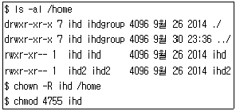
- ihd 사용자는 ihd 파일에 대해서만 실행권한을 갖고, ihd2 파일을 실행할 수 없다.
- 해당 디렉토리에 대한 권한이 없기 때문에 퍼미션은 변경되지 않는다.
- staff 그룹은 ihd2 파일을 수정할 수 있다.
- 모든 사용자는 ihd 파일을 ihd 사용자의 권한으로 실행할 수 있다.
(정답률: 65%)

2. 다음과 같이 설정되어 있는 경우에 /home/user1를 포함한 하위디렉토리 및 파일의 소유자를 white로 변경하고자 할 때 알맞은 것은?
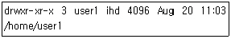
- chsh -R white /home/user1
- chmod -R white /home/user1
- chown -R white /home/user1
- chuser -R white /home/user1
(정답률: 84%)
3. 다음 중 명령어의 결과로 ihd.sh 스크립트에 SetUID의 설정으로 틀린 것은?
- chmod 3755 ihd.sh
- chmod 4755 ihd.sh
- chmod 5755 ihd.sh
- chmod 6755 ihd.sh
(정답률: 68%)
4. 다음 중 리눅스 파일에 대한 설명으로 틀린 것은?
- 디렉토리 파일은 파일 및 디렉토리의 이름뿐 아니라 해당 파일 및 디렉토리에 대한 포인터가 들어있는 파일이다.
- 일반파일은 텍스트, 또는 실행 가능한 바이너리 프로그램 및 여러 가지 유형의 데이터를 포함 할 수 있다.
- 파일확장자의 의미가 없으며, 파일 속성을 변경하여 실행 파일로 사용할 수 있다.
- 파일명내에 공백이나 필드분리자를 포함할수있다.
(정답률: 73%)
5. 다음 명령어의 빈칸에 알맞은 내용으로 순서대로 나열한 것으로 알맞은 것은?(조건 : IDE 방식의 P-ATA에 연결된 2번째 디스크의 첫번째 파티션을 ext4 파일시스템 형식으로 read-only 옵션을 주어 마운트하려고 한다.)
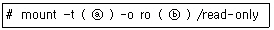
- ⓐ ext4 - ⓑ /dev/hda1
- ⓐ ext4 - ⓑ /dev/hdb1
- ⓐ /dev/hda1 - ⓑ ext4
- ⓐ /dev/hdb1 - ⓑ ext4
(정답률: 70%)
6. /home 파일시스템의 무결성에 문제가 생겨 파일 시스템 체크를 하고자 한다. e2fsck 명령어의 모든 질문에 yes 라는 답변으로 반복하여 처리하고자 할 경우 사용하여야 할 명령어로 알맞은 것은?
- e2fsck -y /home
- e2fsck -Y /home
- e2fsck -f /home
- e2fsck –9F /home
(정답률: 78%)
7. 다음 중 MS-DOS의 chkdsk 명령어나 Windows 운영체제의 디스크검사와 유사한 기능의 리눅스 명령어로 알맞은 것은?
- fdisk
- chkconfig
- parted
- e2fsck
(정답률: 63%)
8. 다음 중 mount 명령어의 설명으로 알맞은 것은?
- 디스크의 파티션을 생성·삭제·확인하는데 사용한다.
- 파일시스템의 무결성 오류를 수정할 때 사용한다.
- 파티션의 파일시스템을 생성할 수 있다.
- CD-ROM과 같은 광학드라이브를 /mnt 같은 디렉토리에 붙여서 사용할 수 있게 해준다.
(정답률: 77%)
9. 다음 중 파일이나 디렉토리의 소유권을 변경하고자 할 때 사용하는 명령어로 알맞은 것은?
- chown
- chmod
- chfile
- chdir
(정답률: 76%)
10. 다음 중 /home 디렉토리의 사용량을 확인하고자 할 때 사용할 수 있는 명령어로 알맞은 것은?
- df –9k /home
- df -sk /home
- du –sk /home
- dd –9k /home
(정답률: 76%)
11. 다음 중 시스템에 새로운 파일 시스템을 생성하여 사용하려 할 때의 사용되는 명령어의 순서로 알맞은 것은?
- mkfs -> fdisk -> mount
- mkfs -> mount -> fdisk
- mount -> mkfs -> fdisk
- fdisk -> mkfs -> mount
(정답률: 74%)
12. 다음 중 ihd 사용자의 .bash_profile의 내용을 복사하여 .bashrc 파일을 새로 생성하려할 때 사용할 수 없는 명령어로 알맞은 것은?(단, 현재 로그인한 유저는 ihd 이다.)
- cp ${HOME}/.bash_profile ${HOME}/.bashrc
- cp $HOMEDIR/.bash_profile $HOMEDIR/.bashrc
- cp ~ihd/.bash_profile ~ihd/.bashrc
- cp ~/.bash_profile ~/.bashrc
(정답률: 52%)
13. 리눅스시스템에서 xclock 이라는 명령어의 결과 localhost 3번 디스플레이 화면에 시계 어플리케이션이 표시되었다. 이 경우 DISPLAY 변수의 설정 값으로 알맞은 것은?
- export DISPLAY=:0.0
- export DISPLAY=:3.0
- export DISPLAY=3:0.0
- export DISPLAY=3:
(정답률: 68%)
14. 리눅스시스템에서 history | wc –{l의 명령어의 결과가 100 으로 표시되었다. 이 값이 나오도록 먼저 실행된 명령어로 알맞은 것은?
- export HISTFILESIZE=100
- export HISTSIZE=100
- export HISTLENGTH=100
- export HISTLIST=100
(정답률: 77%)
15. 리눅스시스템에서 파일을 삭제할 때 실수를 방지하기 위하여 정말 삭제할 것인지 묻도록 설정하고자 한다. 다음 중 올바른 설정방법으로 알맞은 것은?
- alias rm=rm –{i
- alias rm='rm -i'
- alias rm=(rm –9i)
- alias rm=`rm –9i`
(정답률: 82%)
16. 현재 사용자의 로그인 쉘을 변경하고자 할 때 사용할 수 있는 명령어로 알맞은 것은?
- csh
- chsh
- chshell
- changesh
(정답률: 83%)
17. 사용자가 로그인후 입력한 명령어의 리스트를 확인하는데 사용하는 명령어로 알맞은 것은?
- history
- command
- cmds
- listcmd
(정답률: 85%)
18. /etc/profile 파일에 대한 설명으로 가장 알맞은 것은?
- 시스템 전체(모든 사용자)에 적용되는 환경변수와 시작관련 프로그램을 설정한다.
- 시스템 전체(모든 사용자)에 적용되는 alias와 함수를 설정한다.
- 개인사용자의 환경설정과 시작프로그램 설정과 관련이 있는 파일로 로그인시에 읽어 들인다.
- 개인 사용자가 정의한 alias와 함수들이 있는 파일이다. alias를 지속적으로 사용하려면 이 파일에 설정한다.
(정답률: 64%)
19. 다음 중 [ctrl] + [z] 입력 시에 전송되는 시그널로 알맞은 것은?
- SIGHUP
- SIGTERM
- SIGINT
- SIGTSTP
(정답률: 63%)
20. 다음의 조건으로 crontab 등록할 때 알맞은 것은?
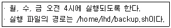
- 0 4 1,3,5 * * /home/ihd/backup.sh
- 4 0 * * 1,3,5 /home/ihd/backup.sh
- 0 4 * * 1,3,5 /home/ihd/backup.sh
- 0 4 1,3,3 * * /home/ihd/backup.sh
(정답률: 82%)
21. 다음 중 nice 명령어에 대한 설명으로 틀린 것은?
- 프로세스의 우선순위를 변경하는 명령으로 NI 값을 설정할 때 사용한다.
- 일반 사용자만이 NI 값을 감소시켜 우선순위를 높일 수 있다.
- NI 값이 작을수록 우선순위가 높다.
- NI의 기본값은 0이고, 지정 가능한 값의 범위는 -20 ~ 19까지이다.
(정답률: 77%)
22. 다음 중 crontab 명령어에 대한 설명으로 틀린 것은?
- -l : crontab에 설정된 내용을 출력한다.
- -e : crontab의 내용을 작성하거나 수정한다.
- -r : crontab의 내용을 복사한다.
- -u : root 사용자가 특정 사용자의 crontab 파일을 다룰 때 사용한다.
(정답률: 70%)
23. 다음 중 ps의 주요 옵션 중 틀린 것은?
- a : 터미널과 연관된 프로세스를 출력한다.
- u : 프로세스의 소유자를 기준으로 출력한다.
- e : 해당 프로세스에 관련된 환경변수 정보를 함께 출력한다.
- f : 데몬 프로세스처럼 터미널에 종속되지 않는 프로세스를 출력한다.
(정답률: 60%)
24. 다음 ( 괄호 ) 안에 들어갈 설명으로 알맞은 것은?
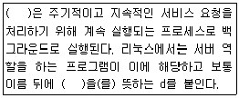
- 데몬(daemon)
- 클라이언트
- 포그라운드 프로세스
- 백그라운드 프로세스
(정답률: 87%)
25. 다음 중 리눅스에서 최초로 프로세스가 실행될 때 PID 1번을 할당받는 프로세스로 알맞은 것은?
- shell
- init
- cron
- df
(정답률: 83%)
26. 다음 중 기본 프로세스가 교체되면서 새로운 프로세스로 할당하는 명령으로 알맞은 것은?
- exec
- fork
- ps
- replace
(정답률: 66%)
27. 다음 중 데몬에 대한 설명으로 틀린 것은?
- 주기적이고 지속적인 서비스 요청을 처리하기 위해 계속 실행되는 프로세스이다.
- 데몬 프로세스를 실행하는 방법에는 standalone 방식과 inet 방식이 있다.
- standalone 방식과 inet 방식은 관련된 모든 프로세스가 메모리에 상주하여 클라이언트 서비스 요청을 처리하는 방식이다.
- 리눅스에서는 서버 역할을 하는 프로그램들이 이에 해당하고 보통 이름 뒤에 데몬을 뜻하는 d를 붙인다.
(정답률: 74%)
28. 다음 중 kill 옵션 중 시그널의 목록을 확인하는 옵션으로 알맞은 것은?
- -l
- -u
- -p
- -a
(정답률: 83%)
29. vi 편집기에서 현재 커서가 위치한 문자부터 줄의 끝까지 삭제할 때 'D' 명령을 사용한다. 다음 중 emacs에서도 동일한 명령으로 알맞은 것은?
- [Alt]+[k]
- [Ctrl]+[k]
- [Alt]+[d]
- [Ctrl]+[p]
(정답률: 60%)
30. 다음 중 pico 편집기에서 편집된 내용을 저장하는 단축키 조합으로 알맞은 것은?
- [Ctrl]+[x]
- [Ctrl]+[o]
- [Ctrl]+[y]
- [Ctrl]+[v]
(정답률: 56%)
31. 다음 중 리눅스 에디터의 종류와 설명으로 틀린 것은?
- vi는 유닉스 계열 시스템에서 가장 많이 쓰이는 편집기로 빌 조이가 개발하였다.
- emacs는 리처드 스톨만이 매크로기능이 있는 텍스트 교정 및 편집기로 개발하였다.
- pico는 워싱턴대학에서 만든 유닉스용 편집기로 윈도우의 메모장처럼 사용이 간편하다.
- nano는 자유 소프트웨어의 라이선스가 아니므로 소스의 수정이 불가능하다.
(정답률: 78%)
32. 다음 중 vi에 대한 설명으로 틀린 것은?
- vi를 처음 실행하면 명령 모드로 진입한다.
- 명령 모드 상태에서 입력 명령을 실행하면 입력 모드로 전환된다.
- 입력 모드에서 [%] 키를 누르면 명령 모드로 돌아온다.
- 명령 모드에서 ‘:’를 입력하면 화면 아래쪽에 프롬프트가 나타난다.
(정답률: 79%)
33. 다음 중 ( 괄호 )안에 들어갈 편집기로 알맞은 것은?
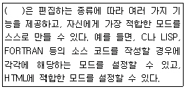
- vim
- emacs
- pico
- nano
(정답률: 62%)
34. vi로 ihd.txt라는 파일을 열면서 커서의 위치를 20번째 줄로 위치시키려고 할 때 알맞은 것은?
- vi + ihd.txt
- vi +20 ihd.txt
- vi–920 ihd.txt
- vi –|r ihd.txt
(정답률: 87%)
35. 다음 중 yum 저장소 파일인 CentOS-Base.repo의 주요 항목에 대한 설명으로 틀린 것은?
- [base] : yum 패키지 서버의 기본 경로를 설정하는 항목이다.
- [updates] : 업데이트된 패키지를 위한 경로를 설정하는 항목이다.
- [extras] : 유용하게 쓸 수 있는 추가 패키지 경로를 설정하는 항목이다.
- [contrib] : 존재하는 패키지들의 기능적 확장과 관련 있는 패키지 경로를 설정하는 항목이다.
(정답률: 60%)
36. rpm 패키지를 설치시 의존성을 검사하지 않기 위해 사용하는 옵션으로 알맞은 것은?
- --nodeps
- --hash
- --percent
- --noscripts
(정답률: 85%)
37. 다음 중 nautilus이라는 패키지를 apt-get 명령으로 제거할 때 알맞은 것은?
- apt-get remove nautilus
- apt-get nautilus remove
- apt-get nautilus clean
- apt-get clean nautilus
(정답률: 75%)
38. 다음 중 totem이라는 패키지를 yum으로 업데이트 할 때 알맞은 것은?
- yum update totem
- yum search totem
- yum list totem
- yum update
(정답률: 84%)
39. yum 명령어 중 ‘High Availability'이라는 그룹과 연관된 패키지 정보를 출력할 때 알맞은 것은?
- groupinstall
- install
- groupinfo
- info
(정답률: 75%)
40. 다음 gzip 옵션 중 결과를 표준 출력으로 보낼 때 사용하는 옵션으로 알맞은 것은?
- -d
- -l
- -c
- -9
(정답률: 48%)
41. 다음 중 tar 명령의 옵션에 대한 설명으로 틀린 것은?
- -r : 기존의 tar 파일 뒤에 파일을 추가한다.
- -C : 디렉토리를 변경할 때 사용한다.
- -x : 생성된 tar 파일을 푼다.
- -f : 파일이 생성되었을 때의 권한을 그대로 유지하게 해준다.
(정답률: 53%)
42. 다음 중 ( 괄호 ) 안에 들어갈 내용으로 알맞은 것은?
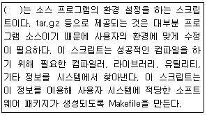
- make install
- gcc
- make
- configure
(정답률: 58%)
43. 다음 중 동일 네트워크상에서 윈도우시스템에 프린터가 공유되어있는데 프린터에 연결하기 위하여 가장 밀접한 관계가 있는 것으로 알맞은 것은?
- Unix Printer
- local
- Samba Printer
- JetDirect
(정답률: 79%)
44. 리눅스 시스템에서 ihd.txt 라는 문서를 출력하고자 할 때 프린터로 출력물을 받을 수 있는 명령어로 틀린 것은?(단, 프린트 시스템은 cups를 사용하며 1.3 버전 이상에서 사용할 수 있는 명령어 시스템이다.)
- lpr ihd.txt
- lpr -r ihd.txt
- lpr –9q ihd.txt
- cat ihd.txt | lpr
(정답률: 51%)
45. 다음 리눅스 사운드카드 제어 명령에 대한 옵션 설명 중 틀린 것은?
- alsactl -f : 사운드카드의 정보를 다시 읽어 들일 때 강제로 복구해온다.
- alsactl -v : alsactl 명령어의 버전을 출력한다.
- alsactl -h : help모드로 alsactl 명령어의 사용법을 출력한다.
- alsactl -d : 디버그 모드를 사용한다.
(정답률: 56%)
46. 리눅스시스템에서 사운드카드의 볼륨을 조정하고자 할 때 사용하는 명령어로 알맞은 것은?(단, 리눅스 사운드시스템으로 ALSA를 사용 중이다.)
- alsactl –9v
- alsactl -V
- alsamixer
- volctl
(정답률: 60%)
47. PCI 슬롯에 새로운 사운드카드를 추가한 후 리눅스 시스템에 인식이 잘 되었는지 여부를 확인 하고자할 때 사용할 수 있는 명령어로 알맞은 것은?
- lspci
- printpci
- pciq
- pciquery
(정답률: 70%)
48. 다음 명령어에 대한 설명으로 틀린 것은?
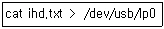
- ihd.txt 파일의 내용이 /dev/usb/lp0 파일로 덮어씌워져 프린트 장치가 삭제된다.
- /dev/usb/lp0 프린터는 USB로 연결되어있다.
- ihd.txt 파일의 내용이 /dev/usb/lp0 프린터로 출력된다.
- cat ihd.txt | lpr 과 같이 장치명을 쓰지 않아도 출력을 할 수 있다.
(정답률: 69%)
2과목: 리눅스 활용
49. 다음 중 윈도우 매니저와 설명이 알맞은 것은?
- twm : 다른 많은 윈도우 매니저의 조상이며, 최초의 ICCM 윈도우 매니저이다.
- Mutter : GNOME 2.x의 기본 윈도우 매니저이다.
- Metacity : GNOME 3.x 버전의 기본 윈도우 매니저이다.
- hpwm : 고성능(High Performance) 윈도우 매니저이다.
(정답률: 46%)
50. 다음 중 KDE의 Konqueror 응용프로그램에서 담당하지 않는 기능으로 틀린 것은?(문제 오류로 실제 시험에서는 모두 정답 처리 되었습니다. 여기서는 1번을 누르면 정답 처리 됩니다.)
- 파일 관리
- E-Mail 관리
- ftp 접속
- 웹브라우저 접속
(정답률: 76%)
51. 다음 중 X 클라이언트 프로그램을 192.168.1.200의 첫 번째 실행된 X 서버의 두 번째 모니터로 전송하는 설정을 위한 명령으로 알맞은 것은?
- export DISPLAY="192.168.1.200:0.1"
- export DISPLAY="192.168.1.200:0.2"
- export DISPLAY="192.168.1.200:1.0"
- export DISPLAY="192.168.1.200:2.0"
(정답률: 62%)
52. 다음 중 X 윈도우 설정을 위해 사용하는 명령으로 틀린 것은?
- xf86cfg
- Xconfigurtator
- xwindows-env-setup
- system-config-display
(정답률: 42%)
53. 다음 중 ( 괄호 )안에 들어갈 내용으로 알맞은 것은?
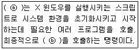
- ⓐ xrun - ⓑ xprocess
- ⓐ xstart - ⓑ xwindow
- ⓐ startx - ⓑ xinit
- ⓐ runx - ⓑ x86
(정답률: 63%)
54. 다음 중 리눅스에서 사용하는 오피스 프로그램 패키지의 프리젠테이션 프로그램으로 알맞은 것은?
- LibreOffice Writer
- LibreOffice Impress
- LibreOffice Draw
- LibreOffice PowerPoint
(정답률: 67%)
55. 다음 중 GNOME의 기반이 되는 라이브러리로 알맞은 것은?
- GTK+
- QT
- Trolltech
- Gwenview
(정답률: 66%)
56. 다음 중 GNOME 데스크톱 기반의 파일 관리 프로그램으로 알맞은 것은?
- GIMP
- nautilus
- evince
- totem
(정답률: 58%)
57. 다음에서 설명하는 프로토콜의 기능으로 알맞은 것은?
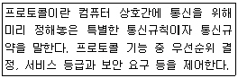
- 흐름제어(Flow Control)
- 연결 제어(Connection Control)
- 전송 서비스(Transmission Service)
- 멀티플렉싱(Multiplexing)
(정답률: 39%)
58. 다음 중 netstat의 status 결과와 내용으로 알맞은 것은?
- TIME-WAIT : 패킷 처리가 끝났지만 분실 되었을지 모를 느린 세그멘트를 위해 당분간 소켓을 닫고 유지하는 상태
- CLOSING : 정상적으로 확인 메시지를 받고 소켓을 종료하는 상태
- LAST_ACK : 원격 호스트가 종료를 위해 소켓을 열어놓고 마지막 ACK 패킷을 기다리는 상태
- SYS-SENT:로컬시스템의 클라이언트 애플리케이션이 원격 호스트에 연결을 요청한 상태
(정답률: 46%)
59. 다음에서 설명하는 OSI 7계층 중 해당하는 계층으로 알맞은 것은?
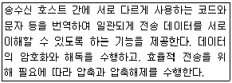
- 세션 계층
- 표현 계층
- 응용 계층
- 전송 계층
(정답률: 67%)
60. 다음 설명으로 알맞은 것은?
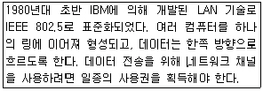
- FDDI
- X.25
- Ethernet
- Token Ring
(정답률: 70%)
61. 다음에서 설명하는 네트워크 계층의 프로토콜로 알맞은 것은?
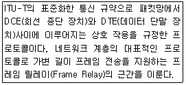
- X.25
- FDDI
- Token Ring
- Ethernet
(정답률: 55%)
62. 다음에서 설명하는TCP/IP 관련 프로토콜로 알맞은 것은?
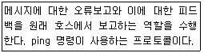
- TCP((Transmission Control Protocol)
- ICMP (Internet Control Message Protocol)
- IP (Internet Protocol)
- ARP (Address Resolution Protocol)
(정답률: 67%)
63. 다음 중 회선교환방식 및 패킷교환방식에 대한 설명으로 틀린 것은?
- 회선교환방식의 대표적인 예가 전화이다.
- 패킷교환방식은 이론상 호스트의 무제한 수용이 가능하다.
- 회선교환방식은 고정된 대역폭을 할당받아 전송된다.
- 패킷교환방식은 회선교환방식에 비해 지연이 덜하다.
(정답률: 61%)
64. 다음 중 IPv4 주소 체계에서 십진 표기법으로 B클래스 서브넷 마스크로 알맞은 것은?
- 255.255.255.255
- 255.255.255.0
- 255.255.0.0
- 255.0.0.0
(정답률: 78%)
65. 다음 중 ( 괄호 )안에 들어갈 내용으로 알맞은 것은?
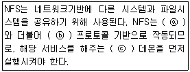
- ⓐ TCP - ⓑ NIS - ⓒ realmd
- ⓐ NIS - ⓑ RPC - ⓒ portmap
- ⓐ NAS - ⓑ CIFS - ⓒ xinetd
- ⓐ UDP - ⓑ HTTP - ⓒ yum
(정답률: 53%)
66. 다음 중 route 명령의 항목 중 Flags의 설명으로 틀린 것은?
- U : 인터페이스가 사용되고 있음을 나타낸다.
- D : 테이블 엔트리가 설정된 경우, ICMP 리다이렉트 메시지로 운영된다.
- P : 테이블 엔트리가설정된경우, ICMP 리다이렉트 메시지에 의해 수정되고 있음을 나타낸다.
- G : 라우트가 게이트웨이로 사용되고 있음을 나타낸다.
(정답률: 42%)
67. 다음 중 C 클래스 기준으로 넷마스크 값이 “255.255.255.192“인 경우(4개의 서브넷) 해당 C 클래스 대역 전체에서 호스트가 사용 가능한 IP 주소의 개수로 알맞은 것은?
- 256개
- 254개
- 252개
- 248개
(정답률: 47%)
68. 다음 중 리눅스 시스템에서 네임 서빙을 받는 우선순위를 설정하는 파일로 알맞은 것은?
- /etc/host.conf
- /etc/sysconfig/network
- /etc/hosts
- /etc/sysconfig/network.conf
(정답률: 40%)
69. 다음 중 IP 주소(Internet Protocol Address)의 설명으로 틀린 것은?
- IP 주소는 특수한 번호로 각 컴퓨터마다 고유한 값으로 제공한다.
- IPv4는 32비트의 이진 숫자로 구성된다.
- IP주소는 0.0.0.0∼255.255.255.255 사이의값을갖는다.
- IP 주소는 첫 4비트 영역의 값에 따라 A, B, C, D 총 4개의 클래스로 나뉜다.
(정답률: 61%)
70. 다음 중 도메인 체계에 대한 설명으로 알맞은 것은?
- 한국인터넷진흥원(KISA)에서는 아직 한글 도메인을 허가하지 않는다.
- 최상위 도메인은 kr(대한민국), us(미국)과 같은 국가코드 최상위 도메인만 사용한다.
- 도메인은 루트 도메인 아래에 역트리 형태의 계층적 구조로 구성된다.
- 우리나라의 국가인터넷 주소는 반드시 국가 도메인인 kr 앞에 기관의 성격을 나타내는 co, or 등을 반드시 표기하여야 한다.
(정답률: 47%)
71. 다음 중 TCP 프로토콜의 설명으로 틀린 것은?
- 연결지향 전송 프로토콜이다.
- UDP에 비해 속도가 빠르다.
- 안전성과 신뢰성이 뛰어나다.
- 3-way handshaking 연결 방식을 갖는다.
(정답률: 70%)
72. 다음 중 www 기반의 다양한 정보를 이용하기 위해 리눅스에서 사용하는 웹브라우저로 틀린 것은?
- 파이어폭스
- 갈레온
- 빔
- 컨쿼러
(정답률: 57%)
73. 다음 중 ftp 명령어와 설명으로 알맞은 것은?
- upload : 로컬시스템에 있는 파일을 원격의 서버로 전송한다. send 명령과 동일하다.
- move : 접속된 서버의 디렉토리를 이동한다.
- get : 원격의 서버에 있는 파일을 로컬시스템으로 가져온다.
- open : 파일을 열어서 사용할 때 사용한다.
(정답률: 60%)
74. 다음 중 리눅스에서 지원하는 네트워크 하드웨어에 대한 설명으로 틀린 것은?
- lo : 로컬 루프백을 나타내는 인터페이스 장치이며, IP는 127.0.0.1로 설정된다.
- dl0 : 패러럴 포트로 구동되는 포켓 어댑터 장치
- ppp0 : 패러럴 케이블을 사용하는 패러럴 라인 인터페이스 장치
- eth0 : 이더넷 카드 인터페이스 장치
(정답률: 47%)
75. 다음에서 설명하는 네트워크 관련 명령으로 알맞은 것은?
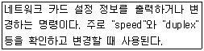
- iptables
- route
- ethtool
- netchange
(정답률: 56%)
76. 다음 중 ( 괄호 )안에 들어갈 명령으로 알맞은 것은?
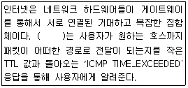
- tracettl
- traceroute
- tracegw
- traceping
(정답률: 67%)
77. 다음 중 서버 가상화 프로그램을 사용할 경우 생성되는 네트워크 인터페이스로 알맞은 것은?
- virbr0
- ppp0
- plip0
- dl0
(정답률: 68%)
78. 다음에서 설명하는 클러스터 기법으로 알맞은 것은?
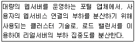
- Linux Virtual Server Cluster
- High Availability Cluster
- Beowulf Cluster
- Super Computing Cluster
(정답률: 46%)
79. 다음 보기에 대한 설명으로 알맞은 것은?
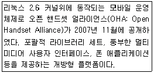
- 윈도 모바일
- 심비안
- IOS
- 안드로이드
(정답률: 70%)
80. 다음 중 리눅스 표준화 동향에 대한 설명으로 틀린 것은?
- 리눅스는 POSIX(Portable Operating System Interface) 표준에 따른다.
- 리눅스는 운영체제와 관련한 국제 표준을 가장 잘 반영하고 있는 운영체제이다.
- 리눅스는 UNIX와의 호환성을 제공하기 위해 UNIX의 소스코드를 재활용하여 개발·배포 되어진다.
- 리눅스는 인터넷 프로토콜 표준 등 인터넷 서비스와 관련한 국제 표준을 채용하고 있다.
(정답률: 48%)